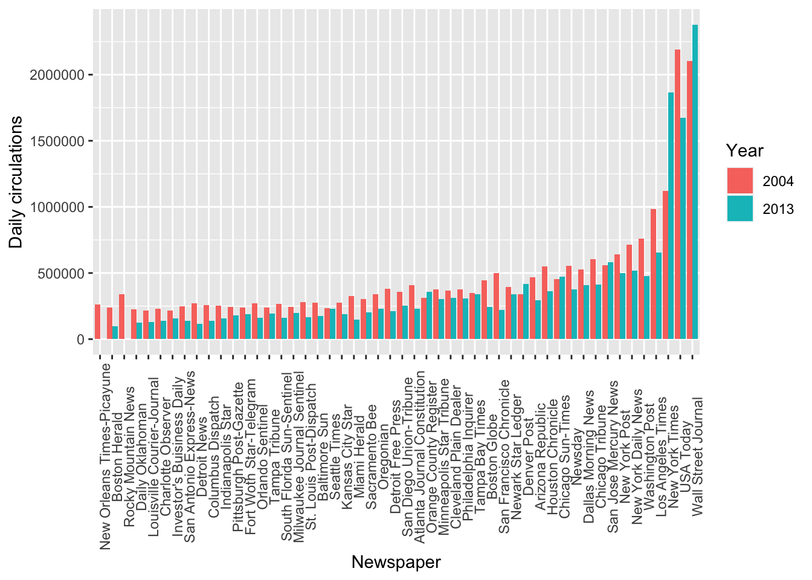
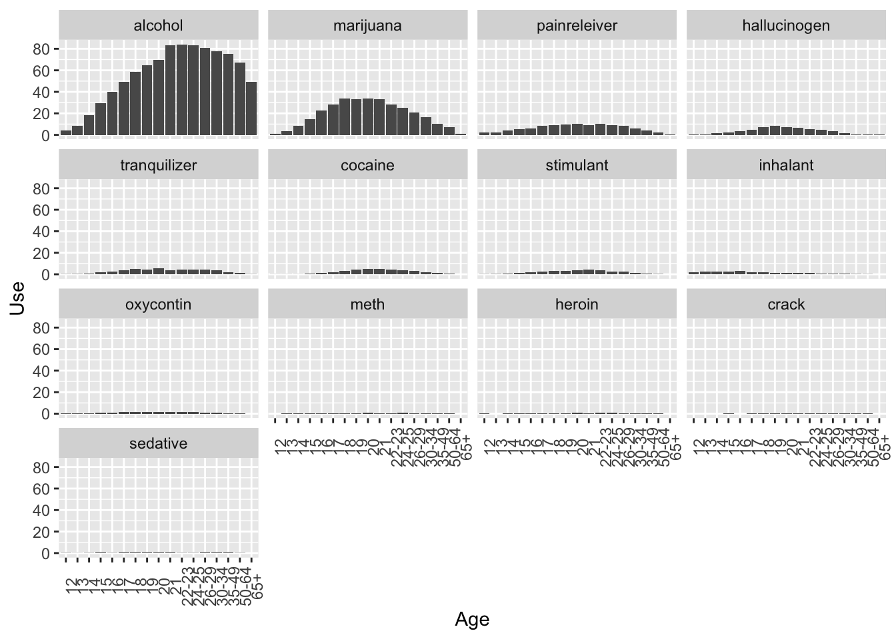

Open RStudio.
Open a new R script in R and save it as wpa_5_LastFirst.R (where Last and First is your last and first name).
Careful about: capitalizing, last and first name order, and using _ instead of -.
At the top of your script, write the following (with appropriate changes):
# Assignment: WPA 5
# Name: Laura Fontanesi
# Date: 12 April 2022In tidy data: - Each variable forms a column. - Each observation forms a row.
This means that data in wide format are not tidy.
Funtions to transform dataset:
pivot_longer()(https://tidyr.tidyverse.org/reference/pivot_longer.html)
pivot_wider()(https://tidyr.tidyverse.org/reference/pivot_wider.html)
We can install the fivethirtyeight which contains many datasets to practice tidying data.
library(tidyverse)
#install.packages('fivethirtyeight')
library(fivethirtyeight)head(pulitzer)## # A tibble: 6 x 7
## newspaper circ2004 circ2013 pctchg_circ num_finals1990_… num_finals2004_…
## <chr> <dbl> <dbl> <int> <int> <int>
## 1 USA Today 2192098 1674306 -24 1 1
## 2 Wall Street Journal 2101017 2378827 13 30 20
## 3 New York Times 1119027 1865318 67 55 62
## 4 Los Angeles Times 983727 653868 -34 44 41
## 5 Washington Post 760034 474767 -38 52 48
## 6 New York Daily News 712671 516165 -28 4 2
## # … with 1 more variable: num_finals1990_2014 <int>Here is the article connected to this dataset: https://fivethirtyeight.com/features/do-pulitzers-help-newspapers-keep-readers/
This format might be good if you are interested in analysing the pctchg_circ variable, which summarizes the percentage change in daily circulation numbers from the year 2004 to the year 2013.
But what if you want to look at the daily circulations? These are two observations done in two different years. Therefore, the data in this format are not tidy.
To make it more tidy, we should pivot the dataset to a longer format:
pulitzer_new = pulitzer %>%
pivot_longer(cols = starts_with("circ"), # circ2004:circ2013
names_to = "year_circulation",
names_prefix = "circ", # not necessary in this case, but better to add
values_to = "daily_circulations") %>%
arrange(year_circulation) # not necessary, but for easier reading/checking
print(dim(pulitzer))## [1] 50 7print(dim(pulitzer_new))## [1] 100 7head(pulitzer_new)## # A tibble: 6 x 7
## newspaper pctchg_circ num_finals1990_… num_finals2004_… num_finals1990_…
## <chr> <int> <int> <int> <int>
## 1 USA Today -24 1 1 2
## 2 Wall Street Journal 13 30 20 50
## 3 New York Times 67 55 62 117
## 4 Los Angeles Times -34 44 41 85
## 5 Washington Post -38 52 48 100
## 6 New York Daily News -28 4 2 6
## # … with 2 more variables: year_circulation <chr>, daily_circulations <dbl>To visualize, we can plot the daily circulation numbers, divided by year and across the different newspapers:
ggplot(data = pulitzer_new, mapping = aes(x = reorder(newspaper, daily_circulations), y = daily_circulations, fill = factor(year_circulation))) +
geom_col(position='dodge') +
labs(x = 'Newspaper', y = 'Daily circulations', fill='Year') +
theme(axis.text.x = element_text(angle = 90))
glimpse(drug_use)## Rows: 17
## Columns: 28
## $ age <ord> 12, 13, 14, 15, 16, 17, 18, 19, 20, 21, 22-23, 24-2…
## $ n <int> 2798, 2757, 2792, 2956, 3058, 3038, 2469, 2223, 227…
## $ alcohol_use <dbl> 3.9, 8.5, 18.1, 29.2, 40.1, 49.3, 58.7, 64.6, 69.7,…
## $ alcohol_freq <dbl> 3, 6, 5, 6, 10, 13, 24, 36, 48, 52, 52, 52, 52, 52,…
## $ marijuana_use <dbl> 1.1, 3.4, 8.7, 14.5, 22.5, 28.0, 33.7, 33.4, 34.0, …
## $ marijuana_freq <dbl> 4, 15, 24, 25, 30, 36, 52, 60, 60, 52, 52, 60, 52, …
## $ cocaine_use <dbl> 0.1, 0.1, 0.1, 0.5, 1.0, 2.0, 3.2, 4.1, 4.9, 4.8, 4…
## $ cocaine_freq <dbl> 5.0, 1.0, 5.5, 4.0, 7.0, 5.0, 5.0, 5.5, 8.0, 5.0, 5…
## $ crack_use <dbl> 0.0, 0.0, 0.0, 0.1, 0.0, 0.1, 0.4, 0.5, 0.6, 0.5, 0…
## $ crack_freq <dbl> NA, 3.0, NA, 9.5, 1.0, 21.0, 10.0, 2.0, 5.0, 17.0, …
## $ heroin_use <dbl> 0.1, 0.0, 0.1, 0.2, 0.1, 0.1, 0.4, 0.5, 0.9, 0.6, 1…
## $ heroin_freq <dbl> 35.5, NA, 2.0, 1.0, 66.5, 64.0, 46.0, 180.0, 45.0, …
## $ hallucinogen_use <dbl> 0.2, 0.6, 1.6, 2.1, 3.4, 4.8, 7.0, 8.6, 7.4, 6.3, 5…
## $ hallucinogen_freq <dbl> 52, 6, 3, 4, 3, 3, 4, 3, 2, 4, 3, 2, 3, 2, 3, 44, 2
## $ inhalant_use <dbl> 1.6, 2.5, 2.6, 2.5, 3.0, 2.0, 1.8, 1.4, 1.5, 1.4, 1…
## $ inhalant_freq <dbl> 19.0, 12.0, 5.0, 5.5, 3.0, 4.0, 4.0, 3.0, 4.0, 2.0,…
## $ pain_releiver_use <dbl> 2.0, 2.4, 3.9, 5.5, 6.2, 8.5, 9.2, 9.4, 10.0, 9.0, …
## $ pain_releiver_freq <dbl> 36, 14, 12, 10, 7, 9, 12, 12, 10, 15, 15, 15, 13, 2…
## $ oxycontin_use <dbl> 0.1, 0.1, 0.4, 0.8, 1.1, 1.4, 1.7, 1.5, 1.7, 1.3, 1…
## $ oxycontin_freq <dbl> 24.5, 41.0, 4.5, 3.0, 4.0, 6.0, 7.0, 7.5, 12.0, 13.…
## $ tranquilizer_use <dbl> 0.2, 0.3, 0.9, 2.0, 2.4, 3.5, 4.9, 4.2, 5.4, 3.9, 4…
## $ tranquilizer_freq <dbl> 52.0, 25.5, 5.0, 4.5, 11.0, 7.0, 12.0, 4.5, 10.0, 7…
## $ stimulant_use <dbl> 0.2, 0.3, 0.8, 1.5, 1.8, 2.8, 3.0, 3.3, 4.0, 4.1, 3…
## $ stimulant_freq <dbl> 2.0, 4.0, 12.0, 6.0, 9.5, 9.0, 8.0, 6.0, 12.0, 10.0…
## $ meth_use <dbl> 0.0, 0.1, 0.1, 0.3, 0.3, 0.6, 0.5, 0.4, 0.9, 0.6, 0…
## $ meth_freq <dbl> NA, 5.0, 24.0, 10.5, 36.0, 48.0, 12.0, 105.0, 12.0,…
## $ sedative_use <dbl> 0.2, 0.1, 0.2, 0.4, 0.2, 0.5, 0.4, 0.3, 0.5, 0.3, 0…
## $ sedative_freq <dbl> 13.0, 19.0, 16.5, 30.0, 3.0, 6.5, 10.0, 6.0, 4.0, 9…The data were given to us again in a wide format, as many observations are stored in separate columns: alchohol_use and heroin_use, for example, are two observations of “drug use” for each of the age categories, so it would make sense to have them in separate rows.
Because in each column name two information are stored, namely the name of the drug and the type of measure (whether it is use of frequency), we need to specify which character divides this information, and give two separate names of columns where we want this information to end up in:
# First we need to fix the "pain_releiver_use" and "_freq" columns (because they are exceptions):
drug_use_new = rename(drug_use,
painreleiver_use = pain_releiver_use,
painreleiver_freq = pain_releiver_freq)
drug_use_new = pivot_longer(drug_use_new,
cols = alcohol_use:sedative_freq,
names_to = c("drug", "measure"),
names_sep = "_",
values_to = "value")
print(dim(drug_use))## [1] 17 28print(dim(drug_use_new))## [1] 442 5head(drug_use_new)## # A tibble: 6 x 5
## age n drug measure value
## <ord> <int> <chr> <chr> <dbl>
## 1 12 2798 alcohol use 3.9
## 2 12 2798 alcohol freq 3
## 3 12 2798 marijuana use 1.1
## 4 12 2798 marijuana freq 4
## 5 12 2798 cocaine use 0.1
## 6 12 2798 cocaine freq 5Now, want to have use and freq as separate columns, as they are two different measures, or variables for each of the observations.
So we need to go 1 step back and make it “wider”:
drug_use_new = pivot_wider(drug_use_new,
names_from = measure,
values_from = value)
drug_use_new = arrange(drug_use_new,
drug)
print(dim(drug_use_new))## [1] 221 5head(drug_use_new, 10)## # A tibble: 10 x 5
## age n drug use freq
## <ord> <int> <chr> <dbl> <dbl>
## 1 12 2798 alcohol 3.9 3
## 2 13 2757 alcohol 8.5 6
## 3 14 2792 alcohol 18.1 5
## 4 15 2956 alcohol 29.2 6
## 5 16 3058 alcohol 40.1 10
## 6 17 3038 alcohol 49.3 13
## 7 18 2469 alcohol 58.7 24
## 8 19 2223 alcohol 64.6 36
## 9 20 2271 alcohol 69.7 48
## 10 21 2354 alcohol 83.2 52ggplot(data = drug_use_new, mapping = aes(x = age, y = use)) +
geom_col() +
labs(x = 'Age', y = 'Use') +
theme(axis.text.x = element_text(angle = 90)) +
facet_wrap( ~ reorder(drug, -use))
Task A
Inspect the police_locals dataset. Here is the article attached to it: https://fivethirtyeight.com/features/most-police-dont-live-in-the-cities-they-serve/.
Create a new dataset, called police_locals_new, made of the following columns: city, force_size, ethnic_group, perc_locals. You should create the ethnic_group column using a pivot function, as shown in this wpa or in wpa_4. The values in this column should be all, white, non_white, black, hispanic, asian. The perc_locals column should contain the percentage of officers that live in the town where they work, corresponding to their ethnic group. Rearrange based on the ethnic_group and inspect it by printing the first 10 lines.
Make a boxplot, with ethnic_group on the x-axis and perc_locals on the y-axis. ethnic_group should be ordered from the lowest perc_locals to the highest. Put appropriate labels.
# these are the solutions for A2, as we will cover plotting later in the seminar
ggplot(data = police_locals_new, mapping = aes(x = reorder(ethnic_group, perc_locals), y = perc_locals)) +
geom_boxplot() +
labs(x = 'Ethnic group', y = 'Mean Percentage Locals') +
theme(axis.text.x = element_text(angle = 90))Task B
Inspect the unisex_names dataset. Here is the article attached to it: https://fivethirtyeight.com/features/there-are-922-unisex-names-in-america-is-yours-one-of-them/.
Create a new dataset, called unisex_names_new, made of the following columns: name, total, gap, gender, share. The gender column should only contain the values “male” and “female”. The share column should contain the percentages.
Multiply the share column by 100. Re-arrange so that the first rows contain the names with the highest total. Print the first 10 rows of the newly created dataset. Create now a new dataset, called unisex_names_common, with the names in unisex_names_new that have a total higher than 50000.
Using unisex_names_common, make a barplot that has share on the y-axis, name on the x-axis, and with each bar split vertically by color based on the gender.
# these are the solutions for B3, as we will cover plotting later in the seminar
ggplot(data = unisex_names_common, mapping = aes(x = name, y = share, fill = gender)) +
geom_col() +
labs(x = 'Name', y = 'Share', fill='Gender') +
theme(axis.text.x = element_text(angle = 90))Task C
Inspect the tv_states dataset. Here is the article attached to it: https://fivethirtyeight.com/features/the-media-really-started-paying-attention-to-puerto-rico-when-trump-did/.
Create a new dataset, with a different name, that is the long version of tv_states. You should decide how to call the new columns, as well as which columns should be used for the transformation.
With the newly created dataset, make a plot of your choosing to illustrate the information contained in this dataset. As an inspiration, you can have a look at what plot was done in the article above.
# these are the solutions for C2, as we will cover plotting later in the seminar
ggplot(data = tv_states_new, mapping = aes(x = date, y= share_of_sentences, fill = state)) +
geom_col() +
labs(x = 'Date', fill = 'State', y= 'Share of sentences')
ggplot(tv_states_new, aes(x=date, y=share_of_sentences, group=state, color=state)) +
geom_line() +
labs(x = 'Date', y = 'News coverage (%)', color='Area') +
scale_color_manual(values=c("#54F708", "blue", "red")) +
theme(axis.text.x = element_text(angle = 90, size = 6))Save and email your script to me at laura.fontanesi@unibas.ch by the end of Friday.